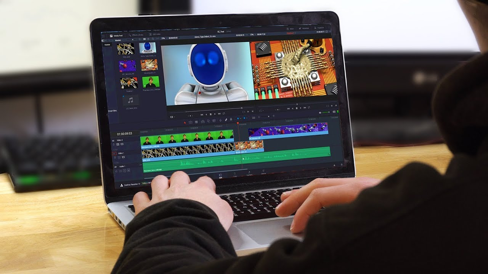

These are three of my basic skills. As a gamer, I know some of the basic components, software, and hardware of a computer. Sitting on my desktop almost all day, makes me learn the basic of computers.
Video editing is not just only my hobby but it is also one of my skills that I keep on improving. The software I always used is Premiere Pro. I am still learning other softwares like After Effects so that I can improve my videos. It is not just for fun but also one of my passion.
I can do basic data entry. I can input, update, process, and organize information. I know data entry is not an easy skill but it is a task I can learn. I once did inputting data and updating data. It takes a long time but I have patience.
Computer Literate

Video Edit
Data Entry